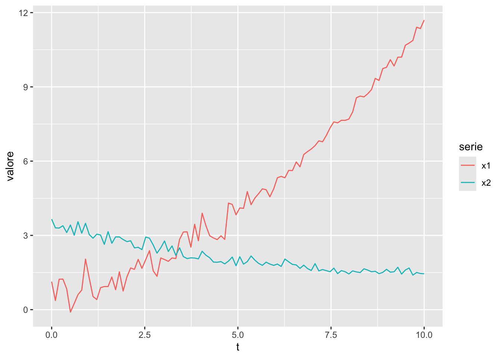
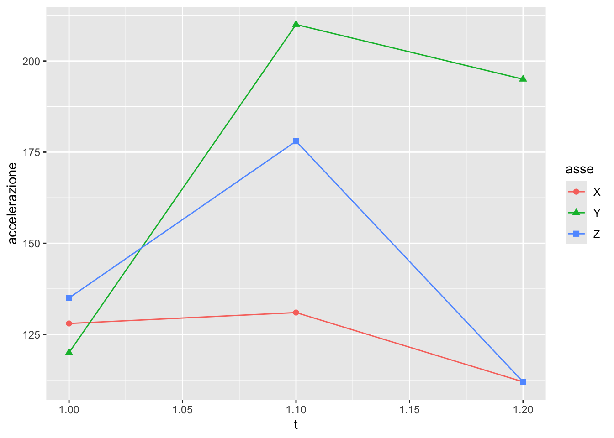

for (element in array) {
# opero su element
}R-recap
Programmazione funzionale e manipolazione delle tabelle con Tidyverse
1 La libreria purrr
purrr è parte del Tidyverse e può essere caricata da sola (library(purrr)) oppure assieme alle altre librerie del Tidyverse (library(tidyverse)).

È utile tenere sotto mano il relativo cheat sheet: https://rstudio.github.io/cheatsheets/purrr.pdf (o cliccando sull’icona a fianco).
1.1 Scopo
Lo scopo di purrr è fornire un’interfaccia funzionale (cioè basata sulle funzioni) per ogni procedura che richieda l’iterazione di un’operazione. In altre parole, usiamo una funzione al posto del corpo di un ciclo for. Invece di:
usiamo:
array %>% map(funzione)dove funzione può essere:
- il nome di una funzione esistente (ad es.
mean) - una funzione anonima (cioè senza nome) definita con
function(argomento) { espressione(argomento) } - una funzione anonima definita con
\(argomento) espressione(argomento) - una funzione anonima definita con la scorciatoia
~ espressione(.)
Quest’ultima sintassi è la più compatta e quella di solito utilizzata. Si noti che se il contenuto della funzione è un’unica espressione si può fare a meno delle parentesi graffe; se invece la funzione richiede più passaggi, le espressioni vanno racchiuse in {} (andando a capo tra un’espressione e l’altra, oppure separandole con ;).
1.2 Vantaggi
In generale: velocità, flessibilità e leggibilità del codice.
Ad esempio, consideriamo la tabella mtcars: vogliamo regredire il modello mpg ~ wt (correlazione tra consumo e massa) per ciascuna classe di numero di cilindri. Con purrr possiamo scrivere:
mtcars %>%
split(mtcars$cyl) %>% # divide un data frame in una lista di data frame
map(~ lm(mpg ~ wt, data = .)) %>%
map(summary) %>%
map_dbl("r.squared") %>%
round(3) 4 6 8
0.509 0.465 0.423
Esercizio
Ottenere lo stesso risultato con una serie di cicli for: confrontare i due approcci.
1.3 Varianti
1.3.1 Mappe
La funzione base map opera su un unico vettore o lista e restituisce sempre una lista. È cioè una mappa \(n\rightarrow n\), dove \(n\) è la lunghezza dell’input, uguale a quella dell’output:
runif(10) %>%
map(~ .^2) %>%
str()List of 10
$ : num 0.000296
$ : num 0.000599
$ : num 0.234
$ : num 0.499
$ : num 0.187
$ : num 0.478
$ : num 0.534
$ : num 0.0106
$ : num 0.816
$ : num 0.00452Come si vede, il risultato di map è una lista di 10 elementi, ciascuno dei quali è il quadrato di un elemento del vettore in ingresso generato da runif(10).
Nei casi pratici spesso è necessario operare su due o più vettori in ingresso, e si desidera ottenere, anziché una lista, un vettore di uno specifico tipo. Per queste operazioni ci sono varianti di map che hanno il nome così costituito:
map_<tipo>(ad es.map_dbl,map_chr,map_int,map_lgl), per restituire un vettore di numeri, caratteri, interi o logici, rispettivamentemap2e le variantimap2_<tipo>per operare su due vettori in ingresso (stessa lunghezza)pmape le variantipmap_<tipo>per operare su una lista di vettori (stessa lunghezza) in ingresso (in parallelo)
Il cheat sheet di purrr è utile per visualizzare le differenze.
1.3.2 Cicli muti
A volte è necessario iterare su una lista di elementi, ma non si desidera ottenere un output. In questi casi si può usare walk e le sue varianti walk2, pwalk. Ad esempio:
LETTERS[1:10] %>%
walk(~ cat(paste("Lettera", ., "\n")))Lettera A
Lettera B
Lettera C
Lettera D
Lettera E
Lettera F
Lettera G
Lettera H
Lettera I
Lettera J 1.3.3 Modifica
Per modificare gli elementi di un insieme (lista o vettore), eventualmente secondo un criterio, si possono usare le funzioni modify, modify_if, modify_at. Ad esempio:
a <- runif(10)
a %>%
modify_if(~ .>0.5, ~ .^2) [1] 0.64818268 0.29773074 0.94141369 0.08057926 0.61415519 0.49281467
[7] 0.48321259 0.81007364 0.28847898 0.21036230a [1] 0.80509793 0.29773074 0.97026475 0.08057926 0.78368054 0.49281467
[7] 0.48321259 0.90004091 0.28847898 0.21036230Si noti che modify_if prende due funzioni come argomenti: la prima è il criterio di selezione, chiamato predicato, la seconda è la trasformazione da applicare agli elementi selezionati. Il predicato deve essere una funzione che restituisce un valore logico (TRUE o FALSE).
Attenzione
A dispetto del nome, modify non modifica l’oggetto in ingresso, ma ne restituisce una copia modificata.
1.3.4 Riduzione/Accumulo
Infine, purrr offre anche funzioni di riduzione, come reduce, accumulate, reduce2, accumulate2. Queste funzioni permettono di ridurre una lista di elementi a un singolo valore (quindi sono una mappa \(n\rightarrow 1\)), secondo un criterio specificato. Ad esempio, applico la funzione addizione per accumulare tutti i numeri da 1 a 10:
1:10 %>%
reduce(`+`)[1] 551.3.5 Nota sulle funzioni vettorializzate
Gli esempi semplici sopra riportati sono in realtà inutili, perché in R tutte le funzioni base sono già vettorializzate, cioè in grado di operare su tutti gli elementi di un vettore atomico (atomic vector).
In R, un vettore atomico è un vettore di elementi di tipo base. Ad esempio, un vettore di numeri interi, di numeri reali, di caratteri, di logici, ecc.
Le funzioni base, invece, non sono in grado di operare su liste o su vettori di oggetti complessi. Per esempio, se si vuole calcolare la media di una lista di valori numerici, non si può fare semplicemente mean(lista), ma bisogna usare map_dbl(lista, mean).
Attenzione
Una funzione vettorializzata è sempre più veloce di un ciclo for o di una qualsiasi mappa purrr, quindi è opportuno usare purrr solo quando necessario, cioè solo quando:
- si deve operare su liste o su vettori di oggetti complessi
- la funzione da applicare NON è vettorializzata, ad esempio perché contiene un condizionale
ifinterno (anche seifelse()è vettorializzata)
1.4 Esempi
Definiamo anzitutto una tabella dati di esempio:
set.seed(0)
n <- 100
data <- tibble(
t = seq(0, 10, length.out = n),
cond = ifelse(t < 5, "A", "B"),
x1 = 0.5 + 0.3*t + 0.08*t^2 + rnorm(n, 0, ifelse(cond == "A", 0.5, 0.2)),
x2 = 3.5 - 0.4*t + 0.02*t^2 + rnorm(n, 0, ifelse(cond == "A", 0.2, 0.1)),
) %>%
pivot_longer(-(t:cond), names_to = "serie", values_to = "valore")
data %>%
ggplot(aes(x=t, y=valore, color=serie)) +
geom_line()
1.4.1 Esempio map
Applichiamo una lista di modelli di regressione ad un set di dati. Questo esempio non è vettorializzabile, perché la funzione lm non è vettorializzata sull’argomento formula, cioè non accetta un vettore di formule in ingresso. Quindi passiamo la lista delle formule da regredire alla funzione map:
list(x~t, x~poly(t, 2, raw=T), x~poly(t, 3, raw=T)) %>%
map(~ {
data %>%
filter(serie=="x1") %>%
select(t, x=valore) %>%
lm(.x, data=.) %>%
summary()
}) [[1]]
Call:
lm(formula = .x, data = .)
Residuals:
Min 1Q Median 3Q Max
-1.46059 -0.56600 -0.09242 0.35637 1.93703
Coefficients:
Estimate Std. Error t value Pr(>|t|)
(Intercept) -0.80555 0.14690 -5.484 3.25e-07 ***
t 1.09876 0.02538 43.294 < 2e-16 ***
---
Signif. codes: 0 '***' 0.001 '**' 0.01 '*' 0.05 '.' 0.1 ' ' 1
Residual standard error: 0.74 on 98 degrees of freedom
Multiple R-squared: 0.9503, Adjusted R-squared: 0.9498
F-statistic: 1874 on 1 and 98 DF, p-value: < 2.2e-16
[[2]]
Call:
lm(formula = .x, data = .)
Residuals:
Min 1Q Median 3Q Max
-0.84623 -0.18891 -0.01886 0.16177 1.14512
Coefficients:
Estimate Std. Error t value Pr(>|t|)
(Intercept) 0.60251 0.10153 5.935 4.56e-08 ***
poly(t, 2, raw = T)1 0.24530 0.04692 5.228 9.85e-07 ***
poly(t, 2, raw = T)2 0.08535 0.00454 18.797 < 2e-16 ***
---
Signif. codes: 0 '***' 0.001 '**' 0.01 '*' 0.05 '.' 0.1 ' ' 1
Residual standard error: 0.3452 on 97 degrees of freedom
Multiple R-squared: 0.9893, Adjusted R-squared: 0.9891
F-statistic: 4483 on 2 and 97 DF, p-value: < 2.2e-16
[[3]]
Call:
lm(formula = .x, data = .)
Residuals:
Min 1Q Median 3Q Max
-0.8575 -0.1873 -0.0179 0.1572 1.1421
Coefficients:
Estimate Std. Error t value Pr(>|t|)
(Intercept) 0.627291 0.133698 4.692 8.97e-06 ***
poly(t, 3, raw = T)1 0.214799 0.116369 1.846 0.067997 .
poly(t, 3, raw = T)2 0.093010 0.027118 3.430 0.000892 ***
poly(t, 3, raw = T)3 -0.000511 0.001782 -0.287 0.774950
---
Signif. codes: 0 '***' 0.001 '**' 0.01 '*' 0.05 '.' 0.1 ' ' 1
Residual standard error: 0.3469 on 96 degrees of freedom
Multiple R-squared: 0.9893, Adjusted R-squared: 0.989
F-statistic: 2960 on 3 and 96 DF, p-value: < 2.2e-16
Attenzione
L’abbreviazione ~. per le funzioni anonime consente di usare il punto . come riferimento all’oggetto in ingresso. In certi casi, però (come in quello qui sopra), il punto è necessario anche per riferirsi all’oggetto passato dalla pipe data %>% ..., quindi ci sarebbe un’ambiguità. In questi casi si può utilizzare .x per riferirsi all’argomento della funzione anonima, e . per riferirsi all’oggetto passato dalla pipe, come sopra fatto.
In alternativa, e per maggior chiarezza, si può usare la forma \(x) ... per la funzione anonima, e . per riferirsi all’oggetto passato dalla pipe.
Si lascia per esercizio modificare il codice di conseguenza
Esercizio
Vogliamo rendere più generale il codice precedente, consentendo di costruire automaticamente la lista delle formule a partire da un vettore di gradi polinomiali. Modificare il codice di conseguenza, ad es. per verificare i polinomi di grado 2, 5, e 3 (in quest’ordine).
Suggerimento: ricordare la funzione as.formula().
c(2, 5, 3) %>%
... # completare
Esercizio
Usando lo stesso set di dati e un’ulteriore chiamata a map(), ripetere l’analisi su entrambe le serie x1 e x2.
Suggerimento: consultare la guida per split() e usare la notazione \(arg) ... per la funzione anonima.
1.4.2 Esempio map_dbl
La funzione map restituisce sempre una lista. Se si desidera un vettore di un tipo specifico, si può usare map_dbl, map_chr, map_int, map_lgl, ecc. Ad esempio, dalle regressioni estraiamo il valore di \(R^2\):
list(x~t, x~poly(t, 2, raw=T), x~poly(t, 3, raw=T)) %>%
map(~ {
data %>%
filter(serie=="x1") %>%
select(t, x=valore) %>%
lm(.x, data=.) %>%
summary()
}
) %>%
map_dbl(~ .$r.squared)[1] 0.9503130 0.9892973 0.9893064
Esercizio
Modificare il codice precedente in modo da eseguire una sola chiamata a una funzione purrr, ottenendo lo stesso risultato.
1.4.3 Esempio: reduce
Le operazioni di riduzione sono abbastanza comuni. Di fatto ogni statistica (cioè indicatore comune) è una riduzione di un insieme di valori. Ad esempio, calcoliamo la media e la deviazione standard di una serie di dati mediante un loop (e senza ricorrere alle funzioni native mean() e sd()):
set.seed(0)
m <- 0
sd <- 0
v <- rnorm(10)
for (e in v) {
m <- m + e
}
m <- m / length(v)
for (e in v) {
sd <- sd + (e - m)^2
}
sd[1] 13.07552sd <- sqrt(sd / (length(v)-1))
list(mean=m, sd=sd)$mean
[1] 0.358924
$sd
[1] 1.205336Ora facciamo la stessa cosa con purrr, usando reduce(). In questo caso la funzione anonima, come specificato dall’help in linea, prende due argomenti: il primo, .x, è il valore accumulato, il secondo, .y, è il valore corrente. Il risultato della funzione anonima viene passato all’iterazione successiva come .x.
m <- reduce(v, ~ .x + .y) / length(v)
sd <- sqrt( reduce(v, ~ .x + (.y - m)^2) / (length(v)-1) )
list(mean=m, sd=sd)$mean
[1] 0.358924
$sd
[1] 1.225706Il codice è decisamente più semplice, tuttavia il valore della deviazione standard è errato. Come mai?
Attenzione
Consultando l’help di reduce(), provare a comprendere il motivo dell’errore nel calcolo della deviazione standard. Usare anche la funzione accumulate() sotto illustrata come versione di debug di reduce().
È necessario prestare attenzione all’inizializzazione dell’accumulatore. Come visto sopra:
- la funzione anonima a due parametri (
.xe.y) è chiamata per ogni elemento della lista - il primo valore della lista originale è usato come
.xiniziale (cioè alla prima iterazione) - ad ogni iterazione successiva,
.xcontiene il risultato della precedente
A volte è necessario inizializzare l’accumulatore con un valore diverso da quello del primo elemento della lista, ad esempio perché il risultato finale di reduce deve essere di tipo diverso dall’elemento della lista, o con un valore diverso da quello del primo elemento. In questi casi si può usare il parametro .init di reduce(), passandogli il valore iniziale della variabile di accumulo. Ad esempio, confrontare quanto segue:
reduce(1:10, ~ .x + .y)[1] 55reduce(1:10, ~ .x + .y, .init=10)[1] 65La prima corrisponde a \(\sum_{i=1}^{10} i\), la seconda a \(\sum_{i=11}^{20} i\).
È forse più utile quando il tipo desiderato in uscita è diverso. Ad esempio, supponiamo di voler accodare ad una lista, inizialmente vuota, una serie di coppie nome-valore in cui i nomi sono le prime 10 lettere, e i valori sono i primi 10 numeri interi. Usiamo reduce2() in modo da poter lavorare sui due vettori (numeri e lettere) in parallelo:
1:10 %>%
reduce2(LETTERS[.], \(acc, n, letter) {
acc[[letter]] <- n;
return(acc)
}, .init=list()) %>%
str()List of 10
$ A: int 1
$ B: int 2
$ C: int 3
$ D: int 4
$ E: int 5
$ F: int 6
$ G: int 7
$ H: int 8
$ I: int 9
$ J: int 10
Nota
Nell’ultimo esempio:
LETTERS[.]è una scorciatoia perLETTERS[1:10], dove1:10arriva come argomento dalla pipe. In questo modo possiamo cambiare1:10con1:20senza dover cambiare anche il vettore di lettere (i due vettori devono avere la stessa lunghezza!).\(acc, n, letter) { ... }è una funzione anonima che prende tre argomenti: l’accumulatore, il valore corrente di del primo argomento direduce2(cioè1:10) e il valore corrente del secondo argomento direduce2(cioèLETTERS[.]).- La funzione aggiunge un elemento alla lista
acccon chiavelettere valoren. return(acc)è necessaria, perché l’assegnazioneacc[[letter]] <- nnon restituisceacc. La funzione anonima deve ritornare il valore accumulato.- È necessario usare la sintassi
\(...)per la funzione anonima, perché non c’è la versione~con 3 argomenti.
1.4.4 Esempio: accumulate
Accumulate si comporta come reduce(), ma restituisce una lista di valori intermedi. Ad esempio, calcoliamo il prodotto cumulativo di una serie di dati, osservando la differenza con reduce
c(1, 5, 3, 9) %>%
reduce(~ .x * .y)[1] 135c(1, 5, 3, 9) %>%
accumulate(~ .x * .y)[1] 1 5 15 135Questa funzione è spesso utile come debug per reduce(), dato che consente di osservare i valori intermedi.
Nota
Invece che una funzione anonima avremmo potuto usare direttamente la funzione * che accetta due argomenti:
c(1, 5, 3, 9) %>% accumulate(`*`)[1] 1 5 15 1351.5 Uso con dplyr::mutate
purrr è particolarmente utile in combinazione con mutate(), per eseguire operazioni complesse su colonne di un data frame. Ad esempio, consideriamo il data frame data definito sopra. Vogliamo aggiungere alla colonna valore una valore in funzione della colonna serie. Dato che if non accetta vettori, dobbiamo usare map():
data %>%
mutate(
valore = map2_dbl(serie, valore, ~ {
if (.x == "x1") {
.y + 0.5
} else {
.y - 0.5
}
})
) %>%
slice_head(n=6) %>%
knitr::kable()| t | cond | serie | valore |
|---|---|---|---|
| 0.0000000 | A | x1 | 1.6314771 |
| 0.0000000 | A | x2 | 3.1563718 |
| 0.1010101 | A | x1 | 0.8680026 |
| 0.1010101 | A | x2 | 2.8044447 |
| 0.2020202 | A | x1 | 1.7287707 |
| 0.2020202 | A | x2 | 2.7968102 |
Possiamo essere più sintetici e scrivere:
data %>%
mutate(
valore = map2_dbl(serie, valore, ~ ifelse(.x == "x1", .y + 0.5, .y - 0.5))
) %>%
slice_head(n=6) %>%
knitr::kable()| t | cond | serie | valore |
|---|---|---|---|
| 0.0000000 | A | x1 | 1.6314771 |
| 0.0000000 | A | x2 | 3.1563718 |
| 0.1010101 | A | x1 | 0.8680026 |
| 0.1010101 | A | x2 | 2.8044447 |
| 0.2020202 | A | x1 | 1.7287707 |
| 0.2020202 | A | x2 | 2.7968102 |
Però ifelse() è vettorializzata, quindi in realtà non c’è bisogno di map():
data %>%
mutate(
valore = ifelse(valore == "x1", valore + 0.5, valore - 0.5)
) %>%
slice_head(n=6) %>%
knitr::kable()| t | cond | serie | valore |
|---|---|---|---|
| 0.0000000 | A | x1 | 0.6314771 |
| 0.0000000 | A | x2 | 3.1563718 |
| 0.1010101 | A | x1 | -0.1319974 |
| 0.1010101 | A | x2 | 2.8044447 |
| 0.2020202 | A | x1 | 0.7287707 |
| 0.2020202 | A | x2 | 2.7968102 |
Se invece avessimo più casi, allora dovremmo usare map():
data %>%
mutate(
i = 1:n(),
r = i %% 3,
valore = map2_dbl(r, valore, ~ {
if (.x == 0) {
.y + 0.5
} else if (.x == 1) {
.y - 0.5
} else {
.y - 1
}
})
) %>%
slice_head(n=6) %>%
knitr::kable()| t | cond | serie | valore | i | r |
|---|---|---|---|---|---|
| 0.0000000 | A | x1 | 0.6314771 | 1 | 1 |
| 0.0000000 | A | x2 | 2.6563718 | 2 | 2 |
| 0.1010101 | A | x1 | 0.8680026 | 3 | 0 |
| 0.1010101 | A | x2 | 2.8044447 | 4 | 1 |
| 0.2020202 | A | x1 | 0.2287707 | 5 | 2 |
| 0.2020202 | A | x2 | 3.7968102 | 6 | 0 |
Conclusione
In generale, quindi, valutare sempre attentamente se sia realmente necessario utilizzare una mappa purrr, e non sia invece sufficiente una funzione vettorializzata, anche se in certe condizioni una mappa o una riduzione possono sono l’unica soluzione per operazioni complesse.
2 La libreria dplyr
dplyr è una libreria del Tidyverse che fornisce un insieme di funzioni per manipolare dati in modo efficiente. È possibile caricare dplyr da solo (library(dplyr)) oppure assieme alle altre librerie del Tidyverse (library(tidyverse)).

L’obiettivo di dplyr è semplificare le operazioni su data frame e tibble, operando per riga o per colonna e permettendo il raggruppamento e la sommarizzazione dei dati.
2.1 Funzioni principali
Le funzioni principali di dplyr sono presentate efficacemente nel cheat sheet https://rstudio.github.io/cheatsheets/data-transformation.pdf (o cliccando sull’icona qui a fianco).
Qui riprendiamo le più comuni, cioè:
- per righe:
filter(): seleziona righe in base a condizioniarrange(): ordina le righe
- per colonne:
select(): seleziona colonnemutate(): crea nuove colonne o modifica colonne esistentirename(): rinomina colonnerelocate(): sposta colonne (e se necessario le rinomina)
- raggruppamento:
group_by(): raggruppa i datisummarise(): sommarizza i dati
- unione di più tabelle:
bind_rows(): unisce due tabelle per righe (una sopra l’altra)join(): unisce due tabelle per colonne (una accanto all’altra, con colonne comuni)
2.1.1 Operazioni per righe
Le operazioni più comuni sono il filtraggio e il riordino delle righe, anche chiamate casi o osservazioni:
data %>%
filter(serie == "x1") %>%
arrange(t) %>%
slice_head(n=6) %>%
knitr::kable()| t | cond | serie | valore |
|---|---|---|---|
| 0.0000000 | A | x1 | 1.1314771 |
| 0.1010101 | A | x1 | 0.3680026 |
| 0.2020202 | A | x1 | 1.2287707 |
| 0.3030303 | A | x1 | 1.2344699 |
| 0.4040404 | A | x1 | 0.8415927 |
| 0.5050505 | A | x1 | -0.0980538 |
Si noti anche la funzione slice_head() che restituisce le prime n righe di una tabella. Sono utili anche slice_tail() (ultime righe) e slice_sample() (un campione di righe estratte casualmente).
Esercizio
- Cosa succede se cambio l’ordine dei vari passi?
- Provare a costruire criteri di selezione più complicati, ad esempio condizione
Be seriex2.
2.1.2 Operazioni per colonne
Le colonne di una tabella sono anche chiamate variabili o campi. Le operazioni più comuni sono la selezione, la creazione e la modifica di variabili:
data %>%
select(t, serie, valore) %>%
rename(`tempo (s)` = t) %>%
mutate(`valore (mV)` = valore + 0.5) %>%
select(-valore) %>%
slice_head(n=6) %>%
knitr::kable()| tempo (s) | serie | valore (mV) |
|---|---|---|
| 0.0000000 | x1 | 1.6314771 |
| 0.0000000 | x2 | 4.1563718 |
| 0.1010101 | x1 | 0.8680026 |
| 0.1010101 | x2 | 3.8044447 |
| 0.2020202 | x1 | 1.7287707 |
| 0.2020202 | x2 | 3.7968102 |
Tutte queste operazioni accettano come argomento il nome o i nomi delle colonne su cui operare. La sintassi rename(`tempo (s)` = t) ad esempio crea una nuova colonna chiamata tempo (s) a partire dalla colonna t, usando i backtick perché il nuovo nome contiene uno spazio e delle parentesi.
In particolare, select() accetta una sintassi molto flessibile per specificare le colonne, ben illustrata sull’help in linea di select(). Ad esempio, è possibile indicare
- intervalli di colonne:
select(t:valore)seleziona le colonne dallatallavalore - combinazioni di colonne:
select(c(t, serie))seleziona le colonneteserie(è possibile usare anche operatori logici&,|,!) - in base al nome:
select(starts_with("x"))seleziona le colonne che iniziano conx,select(ends_with("e"))quelle che finiscono cone,select(contains("1"))quelle che contengono1,select(contains("t")), quelle che contengonot, ecc.
La funzione relocate() serve infine per spostare una colonna, con l’opzione di rinominarla:
data %>%
relocate(condizione=cond, .before=t) %>%
slice_head(n=6) %>%
knitr::kable()| condizione | t | serie | valore |
|---|---|---|---|
| A | 0.0000000 | x1 | 1.1314771 |
| A | 0.0000000 | x2 | 3.6563718 |
| A | 0.1010101 | x1 | 0.3680026 |
| A | 0.1010101 | x2 | 3.3044447 |
| A | 0.2020202 | x1 | 1.2287707 |
| A | 0.2020202 | x2 | 3.2968102 |
Anche con più colonne contemporaneamente:
data %>%
relocate(c(serie, condizione=cond), .before=t) %>%
slice_head(n=6) %>%
knitr::kable()| serie | condizione | t | valore |
|---|---|---|---|
| x1 | A | 0.0000000 | 1.1314771 |
| x2 | A | 0.0000000 | 3.6563718 |
| x1 | A | 0.1010101 | 0.3680026 |
| x2 | A | 0.1010101 | 3.3044447 |
| x1 | A | 0.2020202 | 1.2287707 |
| x2 | A | 0.2020202 | 3.2968102 |
2.1.3 Raggruppamento e sommarizzazione
Il raggruppamento e la sommarizzazione sono operazioni molto comuni in statistica. Ad esempio, vogliamo calcolare la media e la deviazione standard di valore per ciascuna serie:
data %>%
group_by(serie) %>%
summarise(
media = mean(valore),
sd = sd(valore)
) %>%
knitr::kable()| serie | media | sd |
|---|---|---|
| x1 | 4.688258 | 3.3029733 |
| x2 | 2.154934 | 0.6140001 |
Esercizio
Calcolare media e deviazione standard per ciascuna serie utilizzando invece una funzione map().
2.1.4 Unione di tabelle
L’operazione più semplice tra due tabelle è unirle una sopra l’altra, cioè per righe. È il caso in cui si vogliano aggiungere delle osservazioni ad una tabella già esistente. Questa operazione si fa con bind_rows(). Per fare un esempio, cominciamo col separare la tabella data in due parti:
data1 <- data %>%
filter(t < 5)
data2 <- data %>%
filter(t >= 5)Se ora volgiamo riunire le due tabelle, possiamo fare:
data1 %>%
bind_rows(data2) %>%
slice_tail(n=6) %>%
knitr::kable()| t | cond | serie | valore |
|---|---|---|---|
| 9.79798 | B | x1 | 11.410624 |
| 9.79798 | B | x2 | 1.502580 |
| 9.89899 | B | x1 | 11.354701 |
| 9.89899 | B | x2 | 1.461213 |
| 10.00000 | B | x1 | 11.699309 |
| 10.00000 | B | x2 | 1.450917 |
Se in una delle due tabelle mancano una o più colonne, i valori mancanti sono inseriti come NA:
data1 %>%
bind_rows(data2 %>% select(-serie)) %>%
slice_tail(n=6) %>%
knitr::kable()| t | cond | serie | valore |
|---|---|---|---|
| 9.79798 | B | NA | 11.410624 |
| 9.79798 | B | NA | 1.502580 |
| 9.89899 | B | NA | 11.354701 |
| 9.89899 | B | NA | 1.461213 |
| 10.00000 | B | NA | 11.699309 |
| 10.00000 | B | NA | 1.450917 |
L’operazione ortogonale a bind_rows() è bind_cols(), che unisce due tabelle per colonne. Questa operazione è ovviamente possibile solo se le due tabelle hanno lo stesso numero di righe, ma presenta possibili problemi logici: cosa succede se le due tabelle, pur avendo lo stesso numero di righe, hanno righe in ordine diverso? In questo caso, bind_cols() unisce le colonne in base all’ordine delle righe, non in base al contenuto, con risultato inatteso e errato.
Per questo motivo è sempre da preferire left_join(), che unisce due tabelle per colonne in base al contenuto di una o più colonne comuni. Questa operazione è molto comune in analisi dati, ad esempio per unire dati provenienti da fonti diverse. La funzione left_join() accetta come argomenti la tabella di sinistra, la tabella di destra, e le colonne su cui fare il join.
Il join è un’operazione molto comune nell’analisi dei dati, e presente in molti linguaggi e database (SQL). Lo schema a lato presenta un caso esemplare: si hanno due tabelle, una con i clienti e una con gli ordini. Si vuole unire le due tabelle in modo da avere una tabella con tutti gli ordini, e per ciascun ordine il nome del cliente che l’ha effettuato. Questo è un left join, cioè si vogliono tutti gli ordini, anche quelli per cui non c’è un cliente associato. Esistono ovviamente anche right join (tieni tutte le righe della tabella di destra), inner join (tieni solo le righe presenti in entrambe le tabelle), e full join (tieni tutte le righe di entrambe le tabelle).
erDiagram
Clienti {
int ID
string Nome
string Email
}
Ordini {
int ID_Ordine
int Cliente_ID
string Prodotto
}
Clienti ||--o{ Ordini : "LEFT JOIN ON Cliente_ID"
In dplyr il left join si fa con left_join(), il right join con right_join(), l’inner join con inner_join(), e il full join con full_join().
Il caso più comune è il left join:
condizione <- tibble(
ID = LETTERS[1:3],
desc = c("freddo", "caldo", "tiepido")
)
data %>%
left_join(condizione, by=c("cond"="ID")) %>%
relocate(condizione=desc, .after=t) %>%
select(-cond) %>%
slice_sample(n=6) %>%
knitr::kable()| t | condizione | serie | valore |
|---|---|---|---|
| 0.3030303 | freddo | x1 | 1.234470 |
| 3.6363636 | freddo | x1 | 3.144840 |
| 3.9393939 | freddo | x1 | 2.783651 |
| 1.8181818 | freddo | x1 | 1.527759 |
| 5.2525253 | caldo | x1 | 4.771152 |
| 5.4545455 | caldo | x2 | 2.002286 |
Nota
Nell’ultimo chunk, notare l’uso di relocate() per spostare e rinominare la colonna condizione dopo la colonna t.
3 La libreria tidyr
L’ultima libreria del Tidyverse che presentiamo è tidyr, che fornisce funzioni per manipolare la struttura dei dati, cioè per trasformare i dati da wide a long e viceversa.

Il cheat sheet https://rstudio.github.io/cheatsheets/tidyr.pdf) di tidyr è molto utile per capire le differenze tra le funzioni principali. Sebbene la libreria fornisca numerose funzioni, le più comuni sono pivot_longer() e pivot_wider(). Le altre funzioni illustrate nel cheat sheet sono utili per operazioni più specifiche, le useremo meno spesso (o mai), ma vale comunque la pena sapere che esistono.
3.1 Formati wide e long
Raccogliere dati provenienti da diverse sorgenti in una tabella in formato wide è piuttosto comune e intuitivo, ed ha il vantaggio di raggruppare visivamente dati coerenti. Per questo motivo è un modo molto comune di presentare i dati.
Se ad esempio stiamo raccogliendo ogni 0.1 s le misure di accelerazione da un sensore triassiale (assi \(X, Y, Z\)), è naturale avere una tabella con una riga per ciascun campionamento e una colonna per ciascun asse. Questo formato è detto wide:
accel <- tribble(
~ID, ~t, ~X, ~Y, ~Z,
1, 1.0, 128, 120, 135,
2, 1.1, 131, 210, 178,
3, 1.2, 112, 195, 112
)
accel# A tibble: 3 × 5
ID t X Y Z
<dbl> <dbl> <dbl> <dbl> <dbl>
1 1 1 128 120 135
2 2 1.1 131 210 178
3 3 1.2 112 195 112Per mettere in grafico i dati con ggplot2 dobbiamo trattare ogni asse (colonna) come una serie differente:
accel %>%
ggplot(aes(x=t)) +
geom_line(aes(y=X, color="X")) +
geom_line(aes(y=Y, color="Y")) +
geom_line(aes(y=Z, color="Z"))
Tuttavia, per analizzare i dati è spesso più comodo avere i dati in formato long, cioè con una riga per ogni osservazione e una colonna per ogni variabile. Questo formato è più flessibile e permette di usare le funzioni di dplyr e purrr, oltre a ggplot2, in modo più efficiente.
Per convertire i dati da wide a long si usa pivot_longer(). Questa funzione accetta come argomenti la tabella da trasformare, le colonne da mantenere invariate, e le colonne da trasformare in righe. Ad esempio, per trasformare la tabella accel in formato long:
accel %>%
pivot_longer(
cols=-c(ID, t),
names_to="asse",
values_to="accelerazione"
) %>%
knitr::kable()| ID | t | asse | accelerazione |
|---|---|---|---|
| 1 | 1.0 | X | 128 |
| 1 | 1.0 | Y | 120 |
| 1 | 1.0 | Z | 135 |
| 2 | 1.1 | X | 131 |
| 2 | 1.1 | Y | 210 |
| 2 | 1.1 | Z | 178 |
| 3 | 1.2 | X | 112 |
| 3 | 1.2 | Y | 195 |
| 3 | 1.2 | Z | 112 |
Realizzare il grafico con i dati in formato long è più semplice (si noti il riuso dell’estetica e che sono necessarie solo due geometrie al posto delle sei necessarie con i dati in formato wide per ottenere lo stesso grafico):
accel %>%
pivot_longer(
cols=-c(ID, t),
names_to="asse",
values_to="accelerazione"
) %>%
ggplot(aes(x=t, y=accelerazione, color=asse)) +
geom_line() +
geom_point(aes(shape=asse), size=2)
Lo stesso vantaggio si ha ad esempio per le sommarizzazioni:
accel %>%
pivot_longer(
cols=-c(ID, t),
names_to="asse",
values_to="accelerazione"
) %>%
group_by(asse) %>%
summarise(
n = n(),
media = mean(accelerazione),
sd = sd(accelerazione),
min = min(accelerazione),
max = max(accelerazione)
) %>%
knitr::kable()| asse | n | media | sd | min | max |
|---|---|---|---|---|---|
| X | 3 | 123.6667 | 10.21437 | 112 | 131 |
| Y | 3 | 175.0000 | 48.21825 | 120 | 210 |
| Z | 3 | 141.6667 | 33.50124 | 112 | 178 |
Conclusioni
In generale, il formato wide è più compatto, più adatto alla visualizzazione in tabella e alla presentazione dei dati, ma il formato long è più flessibile e permette di usare le funzioni di manipolazione dei dati in modo più efficiente.
È quindi consigliabile generare e memorizzare le tabelle in formato long, e convertirle in wide solo quando necessario per la visualizzazione.